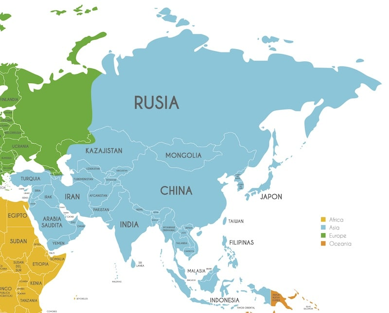

Te explicamos todo sobre Asia, su relieve, religiones y otras características del continente. Además, los países que lo componen.
Asia es el continente más grande y el que presenta la mayor diversidad de razas, culturas y lenguas del mundo.
Ocupa una superficie de 44.614.000 kilómetros cuadrados, que representa las 4/5 partes de la masa continental de Eurasia y que equivale a 1/3 de la superficie terrestre total.
La geografía de Asia presenta características de lo más variadas.
Tiene el pico más alto del mundo, el monte Everest de 8.850 metros, y el canal más profundo del planeta, el lago Baikal que tiene 1.620 metros de profundidad (cuyo fondo se encuentra a 1.165 metros debajo del nivel del mar).
Para retornar a la página principal click aquí